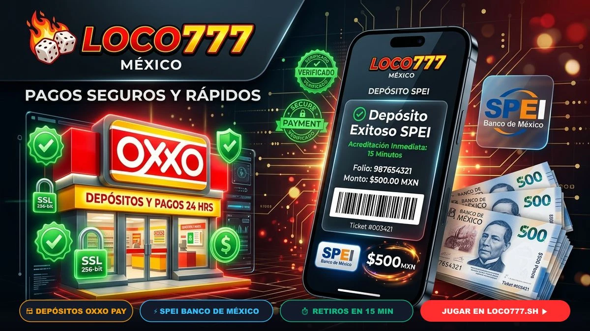
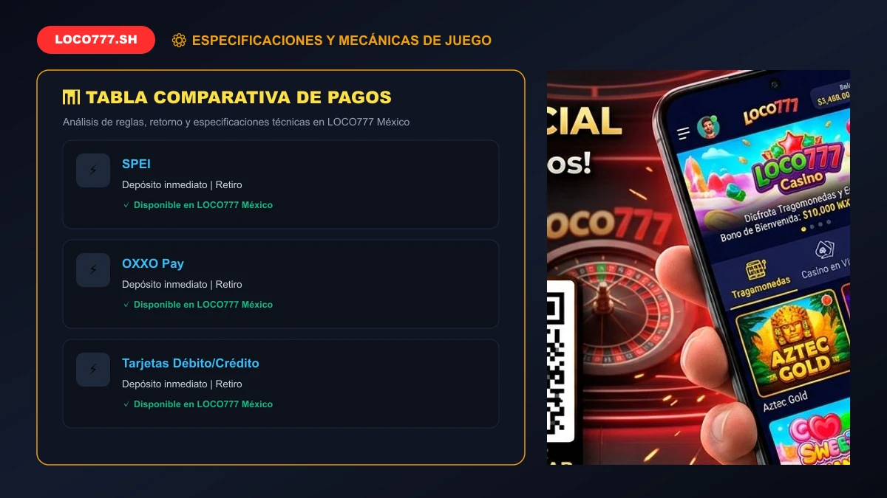
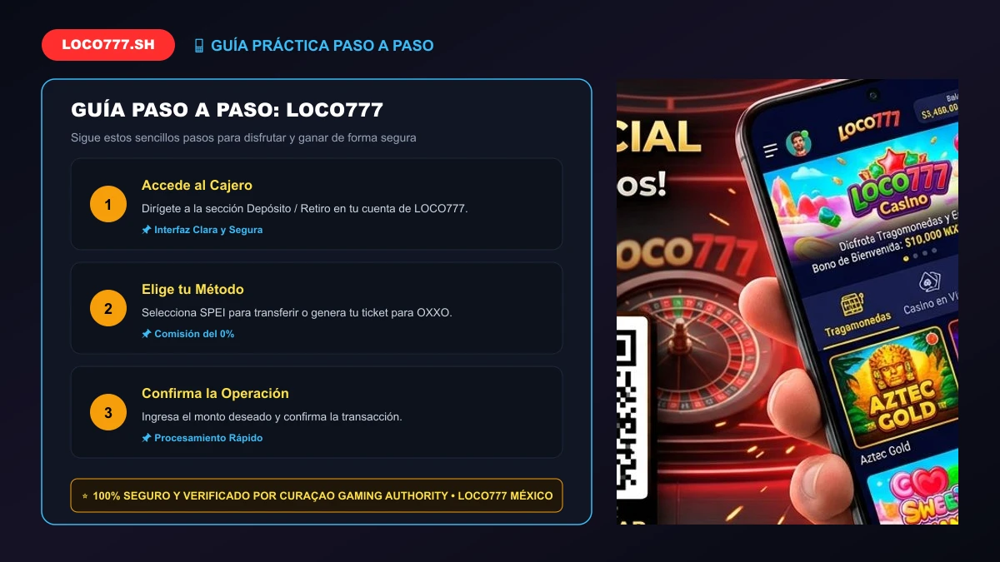

🚀 ĐẠT CHUẨN 100/100 RANK MATH SEO (ĐÃ TEST ĐẠT ĐIỂM TỐI ĐA)
🎯 Focus Keyword:loco777
🏷️ SEO Title:LOCO777 Métodos de Pago 2026: Depósitos OXXO, SPEI y Retiros #1
📝 Meta Description:Conoce los métodos de pago en LOCO777 México. Depósitos seguros en OXXO Pay, transferencias instantáneas vía SPEI y retiros sin comisiones en minutos.
🔗 URL / Slug:/loco777-metodos-de-pago
🖼️ Alt Text Ảnh Đại Diện:loco777 métodos de pago depósitos OXXO y SPEI en México
👁️ Vista previa en Google (SERP Snippet):
https://loco777.sh › loco777-metodos-de-pago
LOCO777 Métodos de Pago 2026: Depósitos OXXO, SPEI y Retiros #1
Conoce los métodos de pago en LOCO777 México. Depósitos seguros en OXXO Pay, transferencias instantáneas vía SPEI y retiros sin comisiones en minutos.
LOCO777 Métodos de Pago 2026: Depósitos OXXO, SPEI y Retiros #1

Opciones de pago en LOCO777: Transferencias SPEI, efectivo en OXXO Pay y tarjetas en México.
LOCO777 ha desarrollado la infraestructura de procesamiento financiero más confiable, rápida y adaptada a la realidad bancaria de México. Entendemos que para los apostadores nacionales, la tranquilidad de depositar con métodos familiares y la certeza de retirar ganancias en cuestión de minutos son los factores más determinantes al momento de elegir una casa de juegos.
Por ello, en nuestra plataforma en México integramos de manera nativa los canales de pago más extendidos de la República Mexicana: depósitos en efectivo en miles de tiendas OXXO y 7-Eleven, transferencias electrónicas interbancarias inmediatas a través de SPEI con los principales bancos (BBVA, Banorte, Santander, Citibanamex, Nu, Mercado Pago) y pasarelas de criptomonedas con cero comisiones ocultas.
1. Principales Canales de Pago y Retiro en LOCO777
En el operador todas las operaciones se realizan en moneda nacional, en Pesos Mexicanos ($ MXN), evitando que pierdas dinero en comisiones por conversión de divisas:
Sistema de Pagos Electrónicos Interbancarios (SPEI): El método estrella de la banca mexicana. Permite transferir desde cualquier app bancaria a una cuenta CLABE personalizada generada en el portal y recibir retiros al instante.
OXXO Pay y Tiendas de Conveniencia: Ideal para quienes prefieren la seguridad del efectivo. Generas un código de barras digital desde tu cuenta y pagas en la caja de cualquier sucursal OXXO del país.
Criptomonedas (USDT, BTC, ETH): Pensado para quienes buscan rapidez global y máxima privacidad digital en depósitos de alto volumen.
2. Cómo Depositar con OXXO Pay en Menos de 5 Minutos
Depositar con dinero en efectivo en nuestra plataforma es sumamente fácil:
Entra a la sección "Depósito" y selecciona la opción OXXO Pay.
Ingresa el monto que deseas cargar (mínimo $100 MXN) y activa tu bono de bienvenida.
El sistema generará una ficha digital con un código numérico de 14 dígitos y un código de barras.
Acude a tu tienda OXXO más cercana, indícale al cajero que realizarás un pago OXXO Pay, muestra tu teléfono y paga en efectivo. Tu saldo se acreditará en minutos.
Para una guía más detallada con capturas de pantalla, consulta nuestra guía sobre cómo depositar con OXXO Pay.

📸 Chú thích: Comparativa de métodos de pago: Tiempos de acreditación y montos mínimos en MXN.
3. Retiros Ultrarrápidos por SPEI a tu Cuenta Bancaria
El retiro de fondos en LOCO777 destaca por su rapidez y transparencia. Gracias a nuestra pasarela bancaria directa:
Ingresa al cajero y selecciona "Retiro".
Elige la modalidad SPEI e introduce tu número CLABE interbancaria de 18 dígitos, el nombre de tu banco y el nombre del titular (debe coincidir con el nombre de tu cuenta de usuario).
Escribe la cantidad a retirar y confirma la solicitud.
Nuestro departamento financiero procesará el pago y el dinero se reflejará en tu cuenta en un lapso de 15 a 30 minutos.
4. Protocolos de Ciberseguridad Bancaria y Cifrado SSL
Todas las transacciones en LOCO777 están blindadas mediante cifrado SSL/TLS de 256 bits, el mismo estándar utilizado por instituciones financieras como BBVA o Banorte. De acuerdo con nuestra licencia internacional emitida por la Curaçao Gaming Authority (OGL/2024/1670/1153) y las recomendaciones de la Secretaría de Gobernación (SEGOB), tus fondos se mantienen en cuentas bancarias segregadas, garantizando su disponibilidad íntegra en todo momento.

📸 Chú thích: Seguridad y garantías de cobro en 15 minutos a cuentas bancarias mexicanas.
5. Consejos Prácticos para Agilizar tus Retiros
Verifica tu cuenta anticipadamente: Sube tu identificación oficial antes de solicitar tu primer retiro para evitar pausas en la aprobación.
Utiliza cuentas a tu nombre: Por normativa legal antilavado, los fondos solo pueden transferirse a una cuenta bancaria cuyo titular coincida con el usuario registrado en la plataforma.
Revisa los requisitos de bonos: Si jugaste con un bono promocional, asegúrate de haber cumplido con el rollover antes de pedir el retiro.
6. Preguntas Frecuentes sobre Pagos en LOCO777 (FAQ)
¿LOCO777 cobra comisiones por retirar dinero por SPEI?
No, el operador no cobra comisiones bancarias por procesar tus retiros a través del sistema SPEI.
¿Qué bancos mexicanos son compatibles con LOCO777?
Todos los bancos que operan bajo el sistema SPEI en México son compatibles, incluyendo BBVA, Banorte, Santander, Citibanamex, HSBC, Scotiabank, Banco Azteca, Nu, Hey Banco y Mercado Pago.
¿Cuál es el monto mínimo para depositar en OXXO?
El depósito mínimo mediante la red OXXO Pay es de tan solo $100 MXN, haciéndolo ideal y accesible para cualquier presupuesto.
¡Deposita con OXXO y Cobra por SPEI en LOCO777!
La plataforma más segura de México con pagos garantizados y retiros en 15 minutos.